Les' Aullian Achmad Argito
Fresh graduate in Agricultural Engineering (S.T.P., Universitas Gadjah Mada, GPA 3.44/4.00, graduated 16 July 2026). My work so far sits where restoration projects succeed or fail: in the field with community partners, and in the data that has to prove the result afterwards. This site takes the six responsibilities in your posting one at a time and shows what I have already done for each, plus three work samples I built for this application.
Your posting, and where my evidence is
| Your posting says | What I can show | Where |
|---|---|---|
| Support blue carbon restoration projects: preparation, administration, documentation, follow-ups and coordination so planting runs smoothly | Led a 6-person team through an IDR 100 million PLN grant: budget plan, land, labour and timeline agreed with a village government and two community groups, a 7-month build, handover and funder reports. | Field Operations |
| Collect, organize and maintain project data from planting, monitoring and field activities | A planting and monitoring workbook with 8 automatic checks, built for this application; 3,025 thesis sweeps cleaned point by point; a 26-treatment trial dataset. | Project Data |
| Field observations, site assessments, monitoring and data collection | Five villages surveyed before choosing one site; a 3-day field observation and farmer interview that tested 8 assumptions; monitoring units installed on an industrial R&D site. | Field Operations |
| Data analysis, report review, scientific writing and data visualization | A plot-to-hectare carbon stock calculation with confidence intervals and plot counts; 3 conference papers in 2026; about 95 lab reports per cohort graded on one rubric. | Carbon & Science |
| Field problem solving with planting partners and local communities | Village farmland projects adapted to the site: solar power where electricity was limited, a tool rebuilt after a field trial with residents' materials, a solution redesigned after an interview proved half my assumptions wrong. | Field Operations |
| Improve SOPs, operational guidelines and risk mitigation | A 21-page HACCP plan I wrote alone (4 critical control points); a planting-day SOP and a 12-risk register built for this application. | SOP & Risk |
| Basic knowledge or experience in carbon stock sampling, measurement and carbon data processing | Knowledge, not field experience yet: the calculation chain from stem diameter and soil cores to Mg C per hectare, worked through with published equations; emissions modelling with IPCC 2006 factors for WRI Indonesia. | Carbon & Science |
| Willing to travel to project sites on short notice; Microsoft Office and Google Workspace | Based in South Jakarta with a SIM A driving licence; two months living on site for KKN and three months on site for an industrial internship. Excel with PivotTable, Power Query, COUNTIFS and INDEX-MATCH; Google Sheets, Docs and Forms. | Field Operations |
Built for this application
Mangrove carbon stock, plot to hectare
Python with published equations and illustrative data: pools per hectare with 90% confidence intervals, how far one soil equation moves the answer, and how many plots a precision target costs.
Planting and monitoring data kit
An Excel workbook that also opens in Google Sheets: planting log, census, 8 checks that caught 9 bad rows, replanting triggers and a dashboard. A separate Python check agrees on all 248 values.
Planting-day SOP and risk register
18 steps from the tide table to paying the partner group, each with an owner and a record, and 12 risks scored by likelihood and severity with controls before and on the day.
Why this role
I want to work where the number reported to a funder is only as good as the field count behind it. CarbonEthics runs community planting, monitors survival for its clients and is now building carbon projects, which is that problem at a larger scale. My best work so far has been either in villages with farmer groups or in making measurement data trustworthy, and this internship asks for both.
What I do not have yet
- Field time on a mangrove or seagrass site. My field work is on farmland, in fish-farming villages and on an industrial R&D site.
- Carbon stock sampling in the field (tree plots, soil cores) or laboratory loss-on-ignition and elemental analysis.
- Work under a carbon standard or registry.
- A degree in one of the listed majors: mine is Agricultural Engineering, which covers soil, water and plant growth.
Field operations: from a funded plan to a site the partners run
Two programmes where I carried the preparation, the paperwork, the coordination with village partners and the work on site, and two field assessments that changed what we built.
EcoMaggot Village, PLN SustainAction 2025
- PlanLed the team that planned an IDR 100.97 million budget in 4 cost groups, with work plans the funder approved.
- AgreeLand, labour and timeline agreed with the village government, KWT Gambang Lestari (the land) and the Kembang Mulyo salak farmer group.
- BuildSurvey, operator training, a 3 x 12 m screened fly house and greenhouse, rearing racks, a chopper-spinner and sensors, Nov 2025 to May 2026.
- Hand overFacility handed to the two community groups who run it.
- ReportPurchases documented against the approved budget for the funder's progress reports.
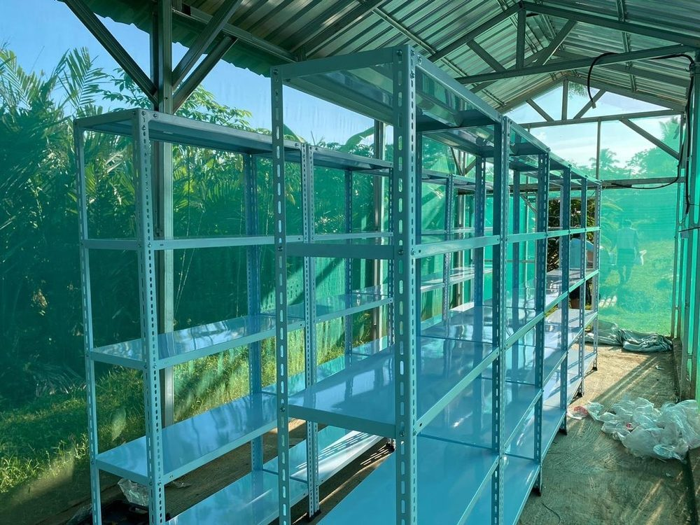
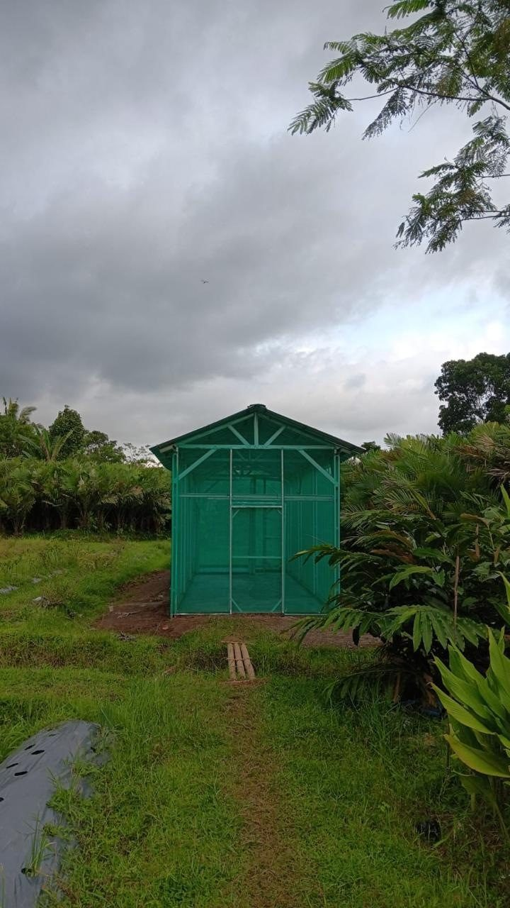
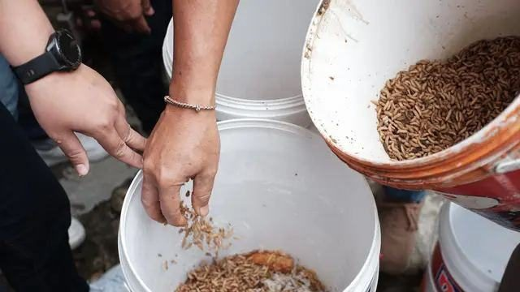
What carries over to a planting programme: a funder's calendar, a partner group that owns the site after handover, and a budget that has to match the receipts. The proposal targets about 75 direct beneficiaries (45 salak farmers and 30 fish farmers); those are design targets, not measured results.
KKN-PPM UGM 2025, Tegalweru village, Malang
- Solar where electricity was limited. Chose a solar-powered ultrasonic pest repeller because the orchard had limited electricity, field-tested its range and placement, then ran a 5-hour maintenance and troubleshooting session for farmers and handed it over with the village government present.
- Built with residents' materials. An ergonomic fertiliser applicator: residents supplied local materials, the team bought the main parts, and the flow and height were fixed after a field trial.
- Handover that sticks. After a 6-hour session on bait replacement for solar UV fruit-fly traps, residents began replacing the bait themselves.
- Irrigation for citrus. A soil-moisture irrigation set-up installed on 10 July 2025 with a 7-hour farmer training; the village government helped carry the equipment to the site.
- Records. 220 effective hours on the 43 activities I led; my daily logbook records 390 effective hours against a 288-hour minimum.
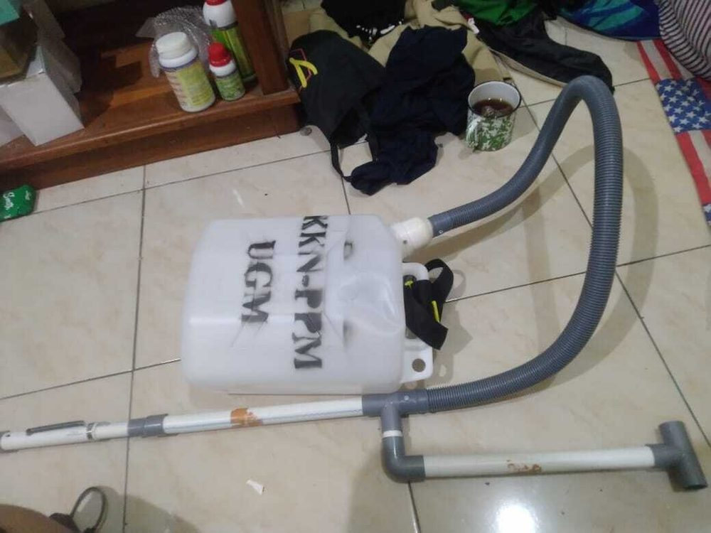
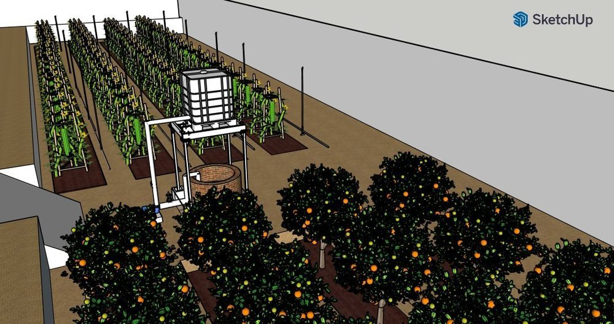
Site assessment before committing
Before the salak-waste programme had a site, the team surveyed five villages and chose Wonokerto, where salak orchards cover about 45% of the village area (705 ha, per the programme proposal). Every later round (PFmuda 2024, PLN SustainAction 2025, BA-SE 2026) built on that one choice.
Testing assumptions with the people who live with the problem
I wrote down 8 assumptions about rejected (afkir) salak in Wonokerto, spent 3 days observing, then interviewed a salak farmer and farmer-group member on 5 August 2026. Four assumptions held and four failed, so the solution moved from training farmers to one collection point with one guaranteed buyer. For a planting partner the lesson is the same: ask before you design the maintenance plan.
Monitoring equipment on an industrial site
With the internship team I installed a solar-powered air-quality station and a floating water-quality unit (turbidity and conductivity sensors): electronics, a concrete footing and the float box, then checked the solar panel voltage on site. I also re-measured a 20.3 x 10.38 m greenhouse and calculated its cooling load (45.5 kW). No photos here: it is the company's site.
Project data: every count traceable to a plot, a date and a person
Monitoring data is only worth reporting if a wrong row is caught before it reaches a client. A kit built for planting and survival data, and two research datasets where I did the cleaning.
Work sample: Planting and Monitoring Data Kit
One row per plot planted, one row per plot visit, and formulas that check every visit against the plot's history. Plot status is computed only from rows that pass every check, so a typo can delay a decision but cannot distort it.
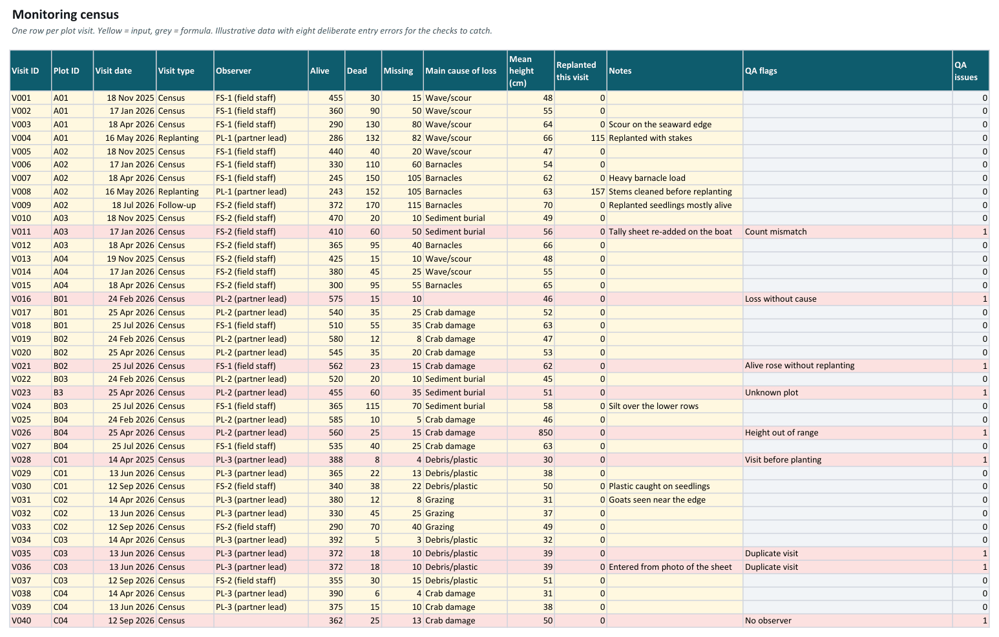
The 8 checks, and what they caught
| Check | Caught here |
|---|---|
| Plot ID not in the planting log | "B3" typed for B03 |
| Visit dated before planting | C01: year typed as 2025 |
| Alive + dead + missing does not equal the expected total | A03, month 3: 520 counted on 500 |
| More alive than last visit, with no replanting | B02, month 6: 562 after 545 |
| Same plot and date entered twice | C03, month 3 (two rows) |
| Mean height outside 10 to 250 cm | B04: 850 cm, a slipped decimal |
| No observer named | C04, month 6 |
| Losses with no cause recorded | B01, month 1 |
What the status sheet decided
- 2 plots to replant (stocking below 70% at the month-6 census): 60 seedlings for A04 and 75 for B03, ordered up to 80% of the design count.
- 5 plots with the census overdue (last clean visit more than 100 days before the report date), including two whose newer rows are still flagged.
- A02 shows why two measures are kept. After replanting 157 seedlings its stocking is back to 74% of the design count, but only 57% of all seedlings ever planted there are alive: replanting fixed the number, not the cost.
- Barnacles are the main cause on the plots that lost the most seedlings (570 across 3 plots).
A separate Python script reads only the input cells, applies the same rules independently and compares its answers with Excel's: 248 values checked, 0 mismatches.
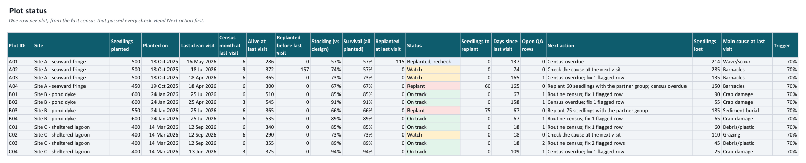
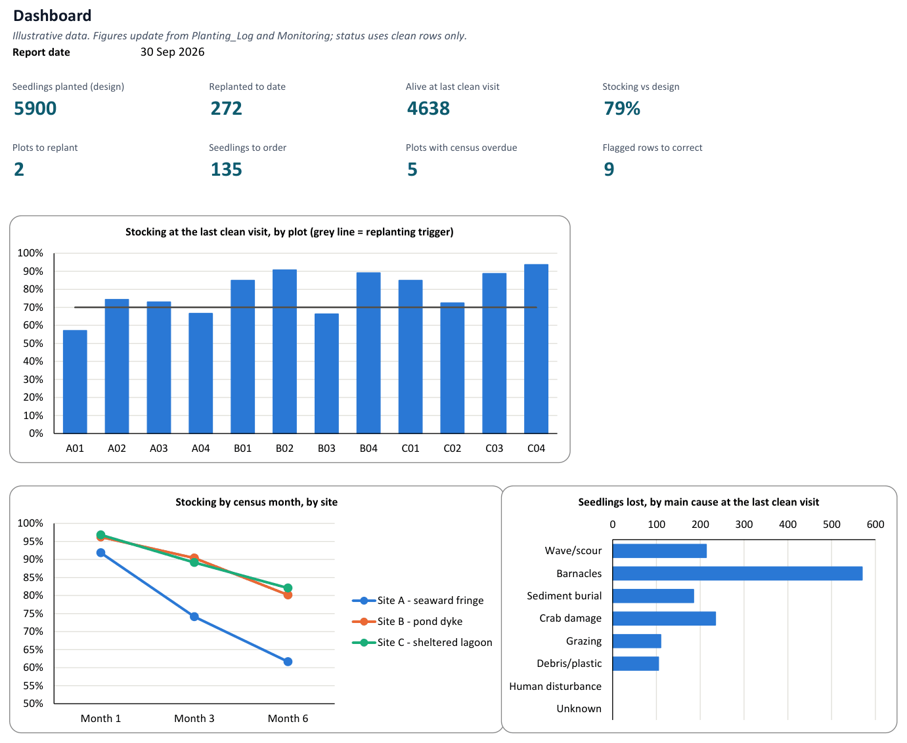
The data rules the workbook enforces
- Counts are cumulative since planting: alive + dead + missing must equal the seedlings planted plus any replanted on earlier visits.
- Replanting is recorded on the visit where it happens, after that visit's count, and enters the expected total from the next visit.
- Status uses only rows that pass every check. A flagged row is corrected at the source, never deleted; until then the plot shows its last clean census.
- Two measures, kept apart: stocking (living trees against the design count) drives replanting; survival (living trees against every seedling ever planted) shows what replanting cost.
Thesis data: catching an artefact before it became a finding
- After graduating I re-analysed the thesis data for the group's journal paper with a 2,905-line Python pipeline that checks every point of 3,025 raw impedance sweeps from 367 measurement sessions before anything is fitted; the median fit R² rose from 0.47 to 0.94 after point-level quality control.
- Found that the same leaf read 1.05, 50.9 or 91.2 kOhm at 1 kHz depending only on the calibration reference resistor, so I reported only the 6.8 to 30.8 kHz window where the readings agreed.
- The habit it left me with is the one a carbon dataset needs: ask how a number was measured before comparing it with another.
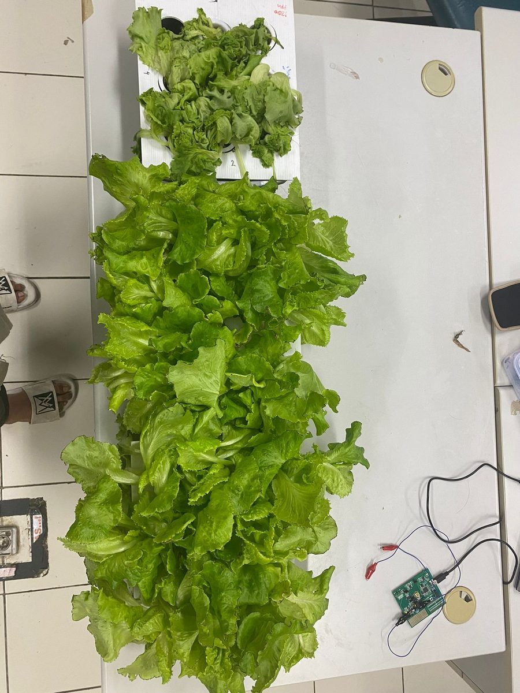
A growth trial I led: PKM-RE 2025 national research grant
- 26 treatments: a complete 3 x 2 x 2 x 2 factorial (species, live or heat-killed, dose, with or without nutrient solution) plus two controls, harvested at day 14.
- Dry mass, chlorophyll, photosynthesis readings and protein (12 samples analysed at UGM's Center for Food and Nutrition Studies); 37 expense lines reported against the grant.
- The honest result: live inoculum with nutrient solution beat plain water by about 49%, but only 10 of the 24 cells beat water at all. Reporting the average as "it improves growth" would have been wrong.
- Led to a filed national patent application (inventor 3 of 7, pending) and the team's paper in IOP Conf. Series: Earth and Environmental Science 1667, 012006 (third of nine authors).
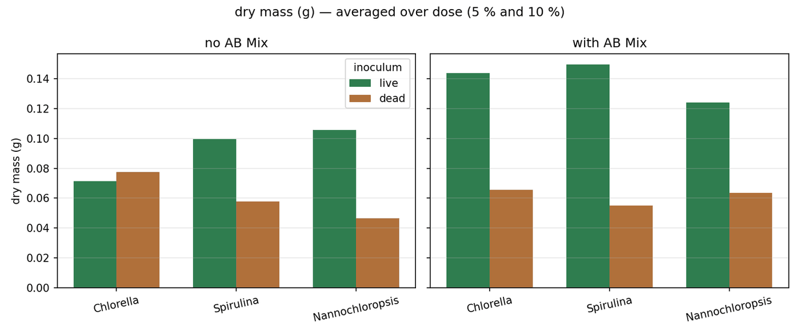
Carbon and science: from plot data to a number someone can defend
A worked example of the calculation your posting asks about, using published equations and illustrative data, followed by the emissions modelling and papers I have done.
Work sample: mangrove carbon stock, plot to hectare
- Stems to biomassKomiyama et al. (2005) common equations: above-ground 0.251 ρ D2.46, roots 0.199 ρ0.899 D2.22.
- Biomass to carbonCarbon fraction 0.47 (IPCC 2006 default), then 44/12 for CO2e.
- Soil coresBulk density x layer thickness x organic carbon %, layer by layer to 100 cm.
- Per hectarePlot means with 90% and 95% confidence intervals, coefficient of variation.
- Plots neededSmallest n with t x CV / √n within the precision target at 90% confidence.
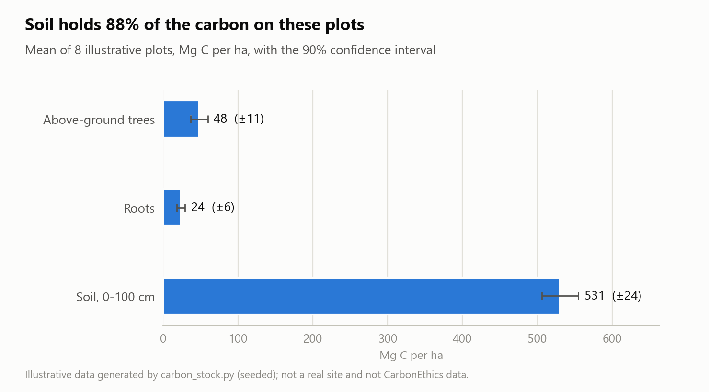
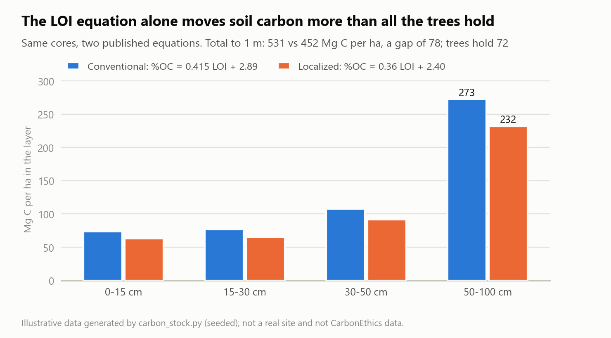
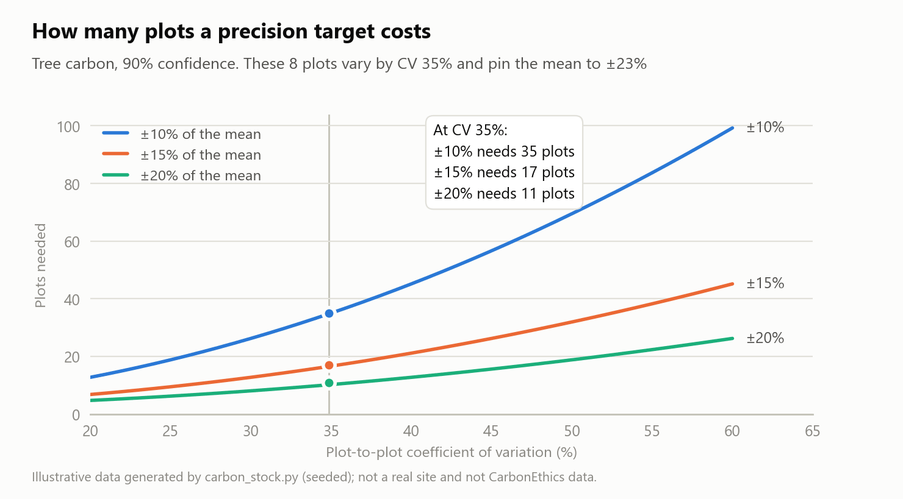
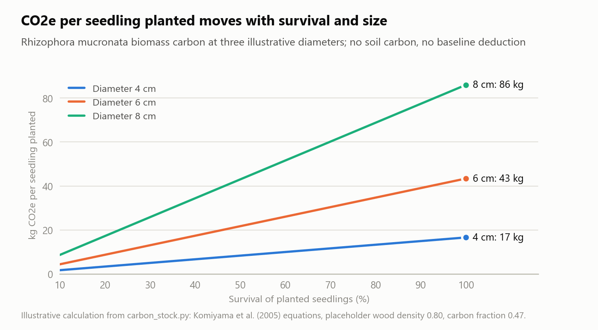
What I would take into a real project
- Fix one soil equation in the SOP and calibrate it. The conventional equation from Palau mangroves and a newer Philippine one differ by 15% on the same cores. Running a subset of samples by elemental analysis tells the project which one fits its own soils. For change between two campaigns the intercept cancels, but the slopes still differ by 13%, so the equation must never switch mid-project.
- Plan plot numbers from a pilot. Tree carbon varied by 35% between these plots, so 8 plots pin the mean only to ±23%; the pilot's variation decides the field budget.
- Report per tree with its basis. A per-tree figure changes fivefold between 4 and 8 cm diameter and scales with survival, so it needs the year, the size and whether it counts survivors or seedlings planted.
- Small stems are reported separately. Stems under 5 cm hold 10% of tree carbon here; size thresholds and nested plot sizes follow the project's methodology.
Sources and placeholders
- Komiyama, A., Poungparn, S. and Kato, S. (2005). Common allometric equations for estimating the tree weight of mangroves. Journal of Tropical Ecology 21: 471-477.
- Salmo et al. (2024). Improving soil carbon estimates of Philippine mangroves using localized organic matter to organic carbon equations. Carbon Balance and Management, doi:10.1186/s13021-024-00276-y. Source of both soil equations: conventional %Corg = 0.415 x %LOI + 2.89 (Palau mangroves) and localized %OC = 0.36 x %LOI + 2.40.
- IPCC (2006). Guidelines for National Greenhouse Gas Inventories, Vol. 4: default carbon fraction 0.47.
- Placeholders: the two wood densities (0.80 and 0.65 g/cm³) must be replaced with species values from the Global Wood Density Database (Zanne et al. 2009) or a site study; the script prints how many placeholders are in use every time it runs.
Emissions modelling: WRI Indonesia, ICUC 2025
Projected Scope 1 and Scope 2 emissions of the Jabodetabek bus fleet to 2060 under business-as-usual and two electrification scenarios, in a Vensim model built on the activity-structure-intensity-fuel framework with IPCC 2006 emission factors, BPS data and Transjakarta annual reports 2019 to 2024.
The sensitivity test is the part I would reuse: a 20% change in the grid emission factor moved total emissions by 14 to 18%, so the factor's source had to be stated before any scenario could be compared.
Scientific writing
- Optimization of Excitation Voltage and Calibration Resistor for Electrical Impedance Spectroscopy-Based Chlorophyll Estimation in Lettuce. IOP Conf. Ser.: Earth Environ. Sci. 1667, 012005 (AESAP 2026, IPB University). Second author, presenter.
- Physiological and Spectral Response of Broccoli Microgreens under Living and Dead Microalgae Biofertilizer Treatments in a Controlled Plant Factory. IOP Conf. Ser.: Earth Environ. Sci. 1667, 012006. Third of nine authors.
- Karakteristik Impedansi Listrik Daun Selada pada Tegangan 0,4 V dan 100 kΩ. Seminar Nasional Agrotropikal 2026, Universitas Mulawarman. First author, presenter.
Report review: as a teaching assistant I graded about 95 lab reports per cohort against one rubric (5 appointments recorded in my Diploma Supplement).
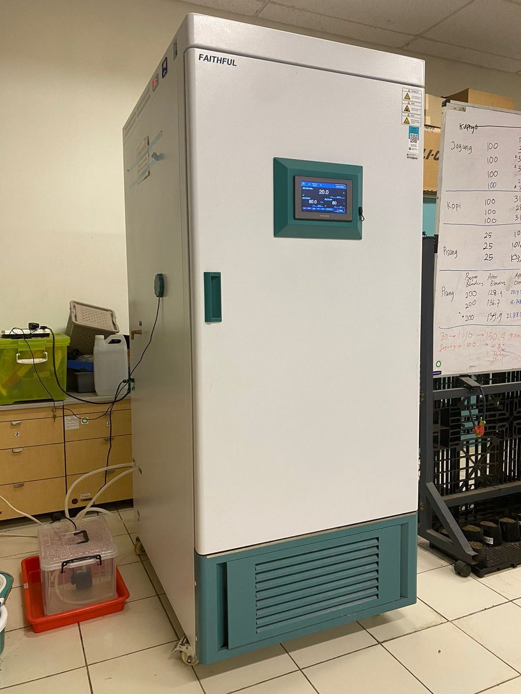
Coursework that carries over
Agricultural Engineering at UGM (programme accredited Unggul and by ASIIN, Germany) is built on soil, water and plants. The courses closest to blue carbon work:
Diploma Supplement learning-outcome scores against a standard of 75: data and technology literacy 97.92, planning and evaluating tasks 96.88, communication 92.86, cross-disciplinary teamwork 100.
SOPs and risk: write the procedure, then make it checkable
Seven quality and food-safety certificates taught me one chain: hazard, control, check, correction, record. The same chain fits a planting day. Both tables below are drafts built from public restoration guidance and my own field work, to be adapted to CarbonEthics' own SOPs.
Work sample: planting-day SOP
| Phase | Step | What good looks like | Owner | Record kept |
|---|---|---|---|---|
| T-14 to T-7: plan | Confirm the plots to be planted, their boundaries and waypoint IDs | Every plot has an ID in Planting_Log before the day | Ops intern | Planting_Log rows |
| T-14 to T-7: plan | Choose the date and start time from the tide table | Planting on a falling-to-low tide; crew off the flat before the flood returns | Field lead | Tide window in the day plan |
| T-14 to T-7: plan | Check that each zone is plantable | Elevation and flooding compared with nearby natural mangroves; species matched to the zone | Science team | Site note with photos |
| T-14 to T-7: plan | Agree roles, numbers and compensation with the partner group in writing | Who plants, who maintains, how much and when, in Bahasa Indonesia | Ops lead + partner lead | Signed agreement or written confirmation on file |
| T-14 to T-7: plan | Order seedlings by zone | Planned count plus 10% spare; minimum height and leaf count stated in the order | Ops intern | Seedling order |
| T-14 to T-7: plan | Permits and notifications | Village office or area authority informed as required; client briefing pack for corporate plantings | Ops lead | Letter or message on file |
| T-14 to T-7: plan | Participant list and safety kit | Emergency contacts; boots, gloves, first aid, water; life jackets for any boat transfer | Ops intern | Participant list, kit checklist |
| T-1: check | Seedling quality check at the nursery | Count, height, healthy leaves, intact root ball, no pests; reject below standard | Science team + partner | QC sheet: accepted and rejected |
| T-1: check | Weather and sea check | Marine forecast checked; go or no-go sent by 06:00 on the day; backup date agreed | Field lead | Go/no-go message |
| T-1: check | Prepare data tools | Forms loaded, plot tags with batch codes printed, GPS and phones charged | Ops intern | Ready checklist |
| Day: plant | Safety and method briefing | Tide time, mud safety, planting depth, staking and tying, nothing plastic left behind | Field lead | Briefing done before planting starts |
| Day: plant | Assign plots to teams, one recorder per plot | Each recorder tallies seedlings planted in their plot | Ops intern | Tally per plot |
| Day: plant | Take photo-point pictures | Same position and direction on every visit, plot ID in the file name | Ops intern | Photo log |
| Day: plant | Collect polybags and ties | Bags out equals bags back | Everyone | Bag count |
| Close-out (same day) | Three-way seedling count | Delivered = planted + spare returned + rejected; signed by field lead and partner lead | Ops intern | Signed tally |
| Close-out (same day) | Enter the data and run the checks | Rows entered the same day, paper sheets photographed, QA flags at zero | Ops intern | Planting_Log and Monitoring rows |
| Follow-up | Census at months 1, 3, 6 and 12 | Replanting by the agreed terms when stocking falls below the trigger | Science team + partner | Monitoring rows, Plot_Status actions |
| Follow-up | Pay the partner group on the agreed date and share results back | Payment logged; results explained to the group in a short session | Ops lead + finance | Payment log, session note |
Why the tide and the zone come first: mangroves grow where the tide floods them for only part of the time, and planting below that zone is a common reason restoration fails (Lewis, 2005, Ecological Engineering 24: 403-418).
Work sample: risk register
| ID | Risk | L x S | Rating | Control before the day | Control on the day | Owner | Early warning |
|---|---|---|---|---|---|---|---|
| R01 | Seedlings planted in the wrong zone (too low, flooded too long) Site chosen by convenience, not by flooding | 2 x 3 = 6 | High | Compare elevation and flooding with nearby natural mangroves; pilot plot before scaling | Plant only inside the marked zone | Science team | Month-1 losses above 20% in the lowest plots |
| R02 | Tide window missed Ceremony or boat delay | 2 x 3 = 6 | High | Schedule from the tide table; ceremony after planting or kept short | Hard stop time announced at the briefing | Field lead | Start delayed by more than 30 minutes |
| R03 | Wave exposure and scour on open fringe Exposed plots, no shelter | 2 x 3 = 6 | High | Plant sheltered zones first, behind wave breakers where they exist; stake seedlings | Check stakes and ties before leaving | Science team | Missing counts rising at month 1 |
| R04 | Barnacle load and debris on stems Low maintenance between visits | 2 x 2 = 4 | Medium | Monthly cleaning duty written into the partner agreement | Show cleaning method at the briefing | Partner lead | Barnacles named as main cause at a census |
| R05 | Poor seedling quality Too young, damaged or diseased stock | 2 x 2 = 4 | Medium | Nursery check on T-1 with written reject criteria; 10% spare | Recorder sets aside rejected seedlings | Science team | Rejection rate above 10% |
| R06 | Counts do not reconcile (delivered, planted, reported) Tally errors, late data entry | 2 x 3 = 6 | High | One recorder per plot; tally sheets printed | Three-way count signed; same-day entry with QA checks | Ops intern | QA flags on entry |
| R07 | Plot cannot be found again No marker, GPS drift, photo point not fixed | 2 x 2 = 4 | Medium | Fixed markers, waypoint ID and photo point for every plot | Photo of each marker | Ops intern | Census note: plot not located |
| R08 | Partner group unclear on roles or payment Terms agreed verbally only | 2 x 3 = 6 | High | Written agreement in Bahasa Indonesia; named contact; payment date | Repeat the terms at the briefing | Ops lead | Maintenance visits missed |
| R09 | Grazing, trampling or human disturbance Livestock or foot traffic near the site | 1 x 2 = 2 | Low | Agree signs or simple fencing with the village where livestock roam | Mark planted rows clearly | Partner lead | Grazing named as main cause |
| R10 | Injury: cuts, slips, heat, boat transfer Mud, shells, sun, small boats | 1 x 3 = 3 | Medium | PPE list, first-aid kit, life jackets, buddy system | Safety briefing; water breaks | Field lead | Any near-miss reported |
| R11 | Bad weather or high waves Season, storms | 2 x 2 = 4 | Medium | Marine forecast check; go or no-go by 06:00; backup date | Stop work if waves or lightning | Field lead | Forecast warning issued |
| R12 | Plastic left on site Polybags and ties dropped | 2 x 1 = 2 | Low | Bag count planned | Bags out equals bags back | Everyone | Bag count short |
A HACCP plan I wrote alone
- Four critical control points, each with a limit, a check, a correction and a record: cooking at 90 °C or more for at least 10 minutes; acidification to pH 4.0 or below (garlic can carry Clostridium botulinum spores); hot filling at 88 °C or more with inversion; and X-ray inspection.
- X-ray, not a metal detector, because the metal lid would trip a detector on every bottle and a detector cannot see glass in glass. Choosing the control that fits the site is the same judgement a planting SOP needs.
Procedures other people follow
- Briefed every group on procedure and laboratory safety before each session, for about 95 students per cohort.
- Courses included Measurement and Instrumentation Engineering, where calibration and data recording were the content, and Electricity and Electronics.
- Graded every report against one rubric.
RainPurify (1st place, ROOTS SDGs 2025, team leader): the operating guide set filter replacement and sensor recalibration in writing, because a filter that is never changed stops filtering long before anyone notices.